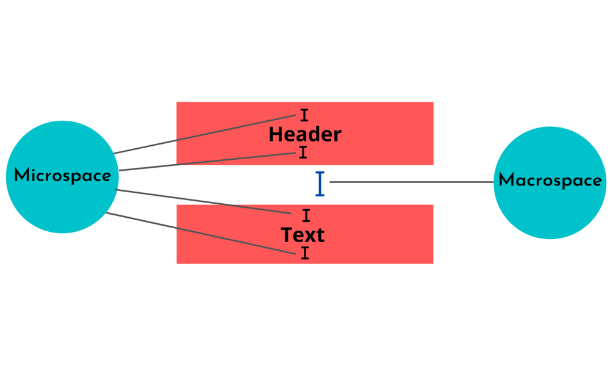
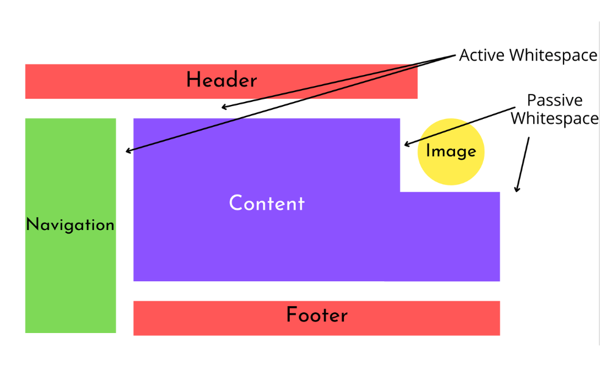
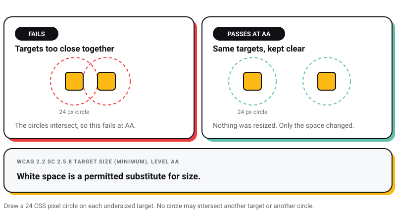
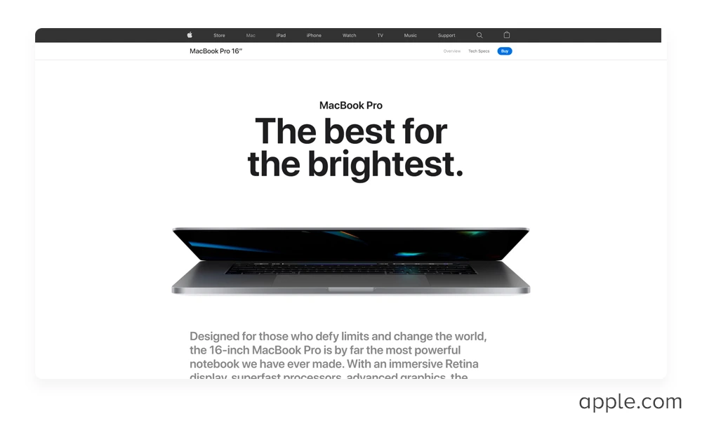
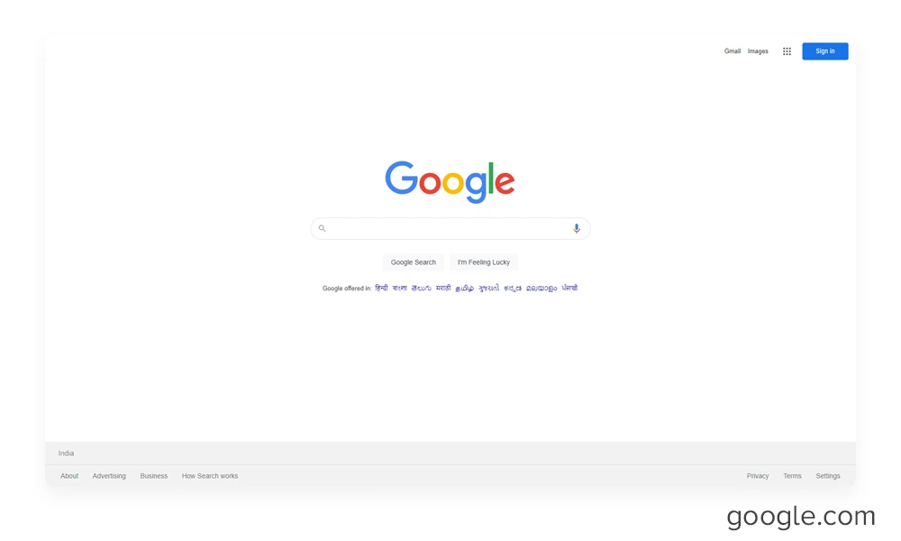
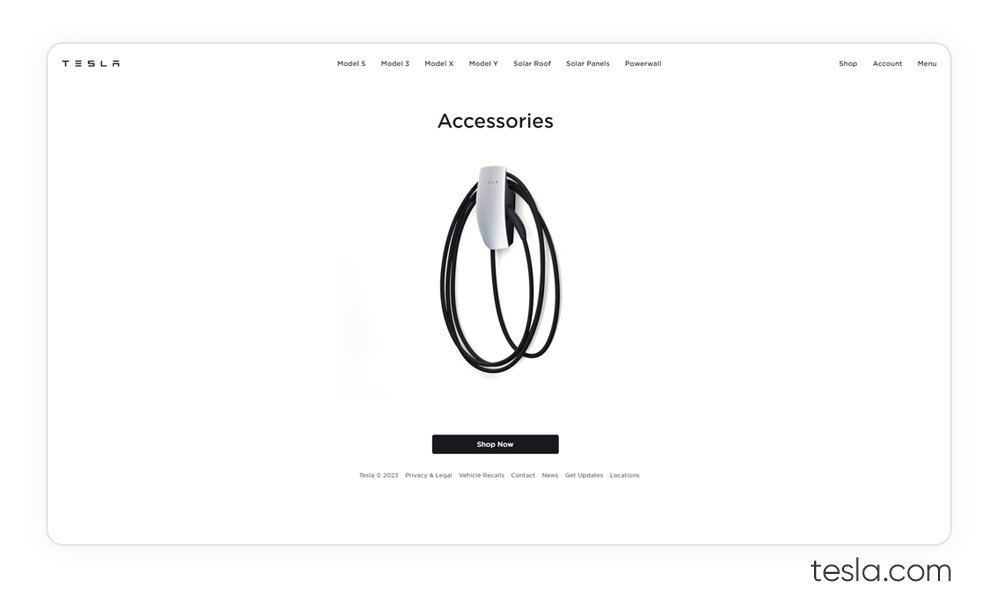
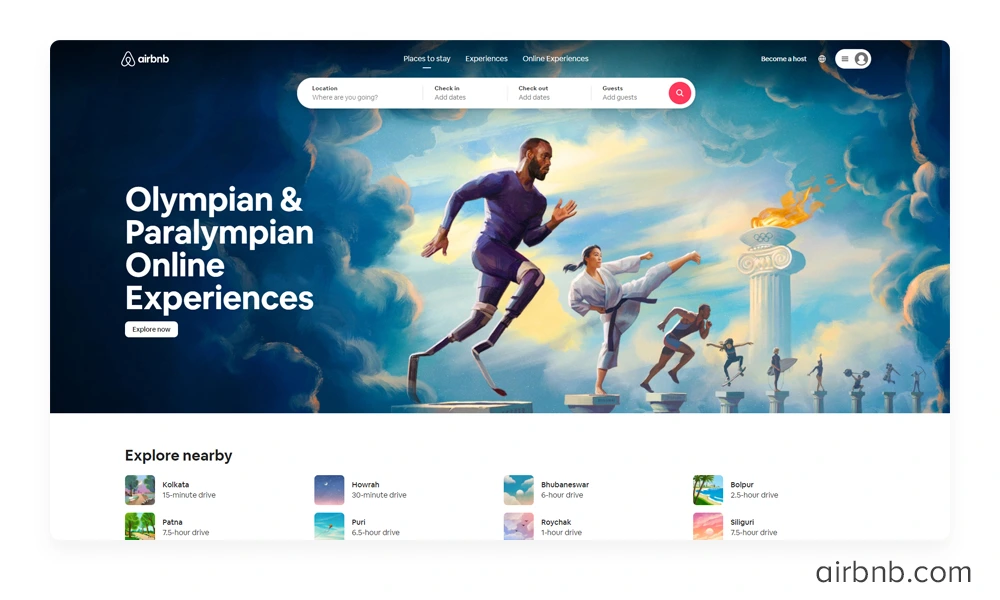
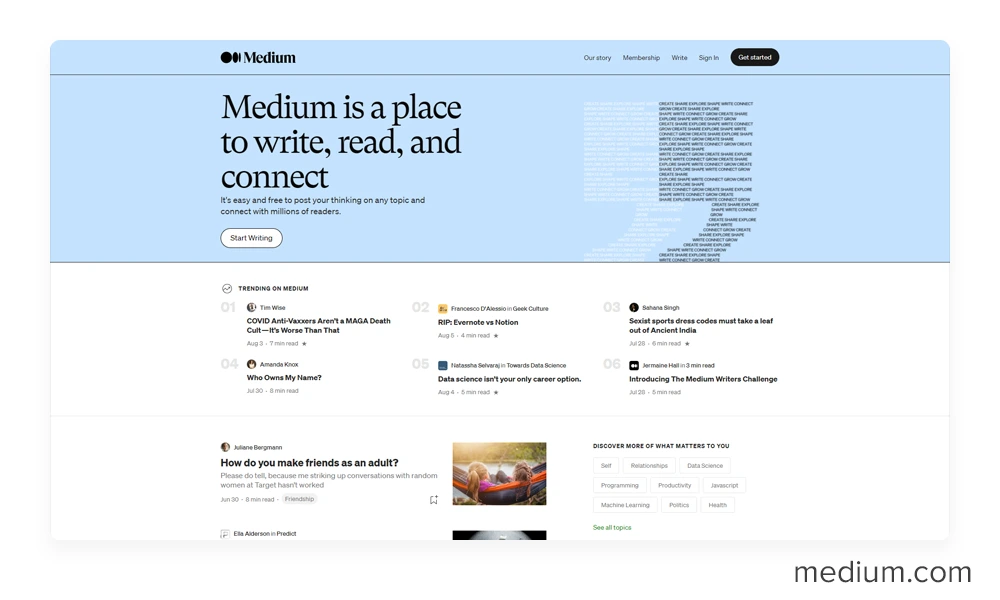
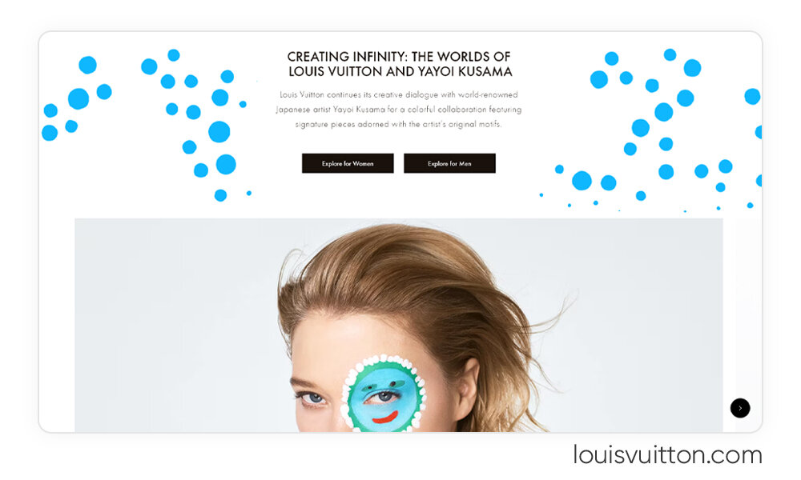
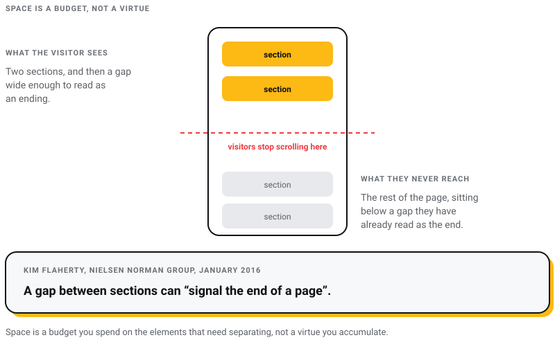

WEB DEVELOPMENT
WEB DEVELOPMENT
AI Website Builders vs Custom Development: Where the Shiny Tools Actually Break
AI website builders are fast, but are they right for your business? Discover where they excel, where they fail, and when custom development is the…

Every second article about white space cites the same statistic: generous spacing improves reading comprehension by almost twenty percent, cited to Lin, 2004. I went and found that paper. It exists. It says nothing of the kind.
I run Pixel Street, a web design studio in Salt Lake, Kolkata. We design and build for brands like Coca-Cola, ITC and Marico. Almost every argument for white space is made with adjectives. Airy. Calm. Premium. Those describe how the designer feels. None is checkable by the person paying the invoice.
So this one is made the other way round. White space is one of the few parts of visual design with published, testable numbers attached, and I would rather defend those than a mood board.
White space is distance, and distance is how a layout says what belongs with what. A reader registers proximity before reading a single word, so if two elements sit close together the reader has already decided they are related, whatever the labels claim. That is the whole mechanism.
Some of those distances are not a matter of taste. They are written into the Web Content Accessibility Guidelines and into Google’s performance metrics, and a layout that ignores them fails an audit however it looks in a deck. The rest is judgement, and I will say which is which.
The claim almost always appears in one form: white space between paragraphs and in the left and right margins increased comprehension by almost twenty percent, attributed to Lin, 2004.
The trail ends at a single bullet in Human Factors International’s UI Design Newsletter for December 2005, a year-end research round-up by Kath Straub. One sentence, no method, no sample size, no page number. It is still live and still uncorrected.
The paper it points at is real: Dyi-Yih Michael Lin, “Evaluating older adults’ retention in hypertext perusal”, Computers in Human Behavior 20(4), July 2004. It manipulated presentation media and text topology, with twenty-four older participants reading Chinese-language interfaces. Not spacing. In 2021 Carl Myhill emailed the author, and Lin’s reply was that the paper “has nothing to do with whitespace”.
So the number holding up an entire genre of design writing was minted in a newsletter, pinned to a study about animated graphs, and copied outward for twenty years by people who never opened the journal.
There is an actual white space reading study from the same year, and almost nobody cites it. Chaparro, Baker, Shaikh, Hull and Brady, “Reading Online Text: A Comparison of Four White Space Layouts”, Usability News 6(2), 2004, from the Software Usability Research Laboratory at Wichita State. Twenty college students, nineteen analysed, reading 800-word passages in four layouts: 10 mm margins against 2 mm, crossed with 5 mm leading against 4 mm.
Margins mattered. Comprehension out of eight was 5.17 and 5.06 with margins against 4.28 and 4.58 without, F(1,17) = 8.34, p = .01. But those same readers were slower with margins, and leading, the space between lines, had no measurable effect on either speed or comprehension.
That is a better result than the folklore and worse news for it. The popular claim credits space between lines and around blocks. The one real experiment found the line spacing did nothing, and that margins bought comprehension by costing reading speed. A trade, on nineteen students, in 2004. Useful, and nowhere near strong enough to carry the sentence people hang on it.
White space is the unoccupied area between design elements: text, images, icons, form fields, buttons. The name is a leftover from print, where the paper was white. On screen it is whatever sits behind the elements, so it can be a colour, a photograph or a texture, and a dark interface has exactly as much of it as a light one.
It is split by size into macro and micro, and by intent into active and passive.

Source: myraah.io. There is no link on that credit because the site’s TLS certificate expired on 20 November 2025 and browsers now refuse the connection.

Source: myraah.io, same expired certificate.
Active white space is a decision you should be able to defend in a review. Passive white space is a default you should check before it defends itself.
I would rather bring this into a client meeting than any amount of talk about elegance. Every row below is published, and a build can be measured against it.
| Spacing | The rule | Where it comes from |
|---|---|---|
| Line height | Must survive being set to at least 1.5 times the font size | WCAG SC 1.4.12 Text Spacing, Level AA |
| Space after a paragraph | At least 2 times the font size | WCAG SC 1.4.12, Level AA |
| Letter and word spacing | At least 0.12 and 0.16 times the font size | WCAG SC 1.4.12, Level AA |
| Space around a small tap target | A 24 CSS pixel circle centred on it must not touch another target | WCAG SC 2.5.8 Target Size (Minimum), Level AA |
| Tap target size | 44 by 44 CSS pixels | WCAG SC 2.5.5 Target Size (Enhanced), Level AAA |
| Gap between tap targets | 48 by 48 pixel targets never fail; 8 pixels between them is a starting point | Lighthouse tap-targets audit |
| Space reserved before content loads | Cumulative Layout Shift of 0.1 or less at the 75th percentile | Google Core Web Vitals |
The row that surprises people is the spacing exception in SC 2.5.8. A target under 24 by 24 CSS pixels can still meet Level AA if it is kept clear of its neighbours: draw a 24-pixel circle centred on each undersized target, and no circle may intersect another target or another circle. White space is a permitted substitute for size, which is the bluntest official statement of what empty space is worth that I know of.

SC 1.4.12 is the other one to internalise, because it is not advice. A reader must be able to force line height to 1.5 times the font size, paragraph spacing to twice, letter spacing to 0.12 and word spacing to 0.16, and nothing may be lost. Fixed-height cards fail on the first try, and that failure is the designer’s. Our guide to the principles of typography covers measure and hierarchy; the website accessibility compliance guide covers the rest of the WCAG surface.
There is a version of white space that costs money when it goes wrong, and the problem is not the amount. It is the timing.
Cumulative Layout Shift measures how much visible content moves while a page loads. Google’s threshold for good is a CLS of 0.1 or less, at the 75th percentile of page loads, reported separately for mobile and desktop. It is one of three Core Web Vitals, alongside Largest Contentful Paint at 2.5 seconds and Interaction to Next Paint at 200 milliseconds.
The usual cause is an element with no space reserved for it: an image without dimensions, a web font rendering at a different size to its fallback, an embed that resizes after arrival. Each creates space late, and a gap that appears after the reader has started reading is worse than a gap that was never there.
The fix is to hand the browser the geometry in advance. aspect-ratio has been available across browsers since September 2021 and holds an image’s box open before a byte of it downloads. Width and height attributes on every img do the same job, as does a minimum height on anything loading asynchronously, including the cookie banner. This is the argument for white space I find hardest to wave away, because it is the only one with a threshold and a report in Search Console.
Four pieces of spacing advice that were reasonable once and are not now.
padding-top: 5% tracks the container’s width, not its height. Narrow the window and vertical rhythm collapses.rem grows with the type it separates.clamp() has been available across browsers since July 2020 and states a floor, a preferred value and a ceiling in one declaration.gap works on grid and flex containers alike, sets spacing once on the container, and removes the last-child cleanup every old stylesheet still carries.None of it was wrong in 2023. It aged, which is the ordinary fate of technique advice and the reason to check the date on any of it. Our roundup of popular web design trends covers where layout technique has moved since.
StatCounter recorded mobile at 67.15 percent of India’s web traffic in June 2026, against 32.29 percent desktop, and the commonest mobile screen it logs here is 360 by 800 pixels, at 18.49 percent. That is the canvas most of our work is read on, and not the canvas most of it is designed on.
Macro spacing drawn on a 1440-pixel artboard does not survive the translation. A 120-pixel section gap reads as confident on a laptop and eats roughly a seventh of a 360 by 800 viewport, so three in a row push the thing the visitor came for below several screens of nothing.
My own rule, a preference rather than a standard: macro spacing scales with the viewport, micro spacing does not. Section gaps should shrink on small screens. Line height, tap target padding and label spacing should not, because those carry legibility and touch accuracy rather than rhythm. Shrinking the wrong one is how a phone layout ends up cramped and endless at once. The responsive web design guide covers the breakpoint mechanics.
These screenshots were captured in 2022 and 2023, and I re-checked every site against them on 30 July 2026, because design examples rot quietly: a company redesigns, the screenshot stays, and the point stops being demonstrable.
Still accurate. apple.com serves a full-bleed hero followed by paired product tiles, and I found no reporting of a marketing-site redesign since. Why it works matters more than that it works: those pages carry very few elements and each has clearly been fought over. The spacing is a consequence of that editing, not a substitute for it.

Source: apple.com
Changed. The search box is no longer surrounded by nothing. Google rolled an AI Mode button onto the homepage on 22 July 2025, and announced a redesigned search box with shortcuts beneath the field at I/O on 19 May 2026. Fetching it today returns AI Mode, Create, Canvas and file upload controls. Still the most restrained homepage at that traffic volume, but the screenshot below is a 2022 artefact.

Source: google.com
Could not verify. tesla.com answers automated requests with a 403 from its edge network, and I found no dated reporting of a homepage redesign either way. So I will not describe a page I could not open: I do not know whether the screenshot below still holds.

Source: tesla.com
Changed twice, on 13 May 2025 and 20 May 2026. The second release replaced browsing with a personalised homepage merging stays, experiences and services into one feed, and fetching it today returns tabbed, destination-grouped carousels rather than the listing grid in the screenshot below. The lesson outlasts the example: a design argument that depends on how one company’s product currently looks has an expiry date, and the company will not tell you when it passes.

Source: airbnb.com
Still accurate, and the most useful example on this list because of it. The reading view is a single centred column with no sidebar, no advertising and nothing interrupting the body. Medium has changed its subscription and paywall terms repeatedly since 2023 without moving that column, which is what a spacing decision looks like when it is load-bearing rather than decorative.

Source: medium.com
Also unverifiable: louisvuitton.com blocks automated requests with a 403 and I found no dated reporting of a redesign. What sits underneath the example is my opinion, not the brand’s: luxury retail buys space because a scarcity of elements reads as confidence, and a page carrying eleven simultaneous promotions cannot signal that whatever its typography does. I believe it; I have not measured it.

Source: louisvuitton.com
rem, and nothing off that scale. Layouts that look inconsistent are usually spaced with nineteen arbitrary values rather than badly spaced.That it is wasted space to be filled. Space is what makes the filled parts legible. Removing it does not add content, it makes the content already there harder to tell apart.
That it is only for minimalist design. Dense interfaces need spacing discipline more than sparse ones. A pricing table, a dashboard and a seat map are held together by micro spacing, and none is minimal.
That it means a white background. It means unoccupied area. A dark theme, a full-bleed photograph and a textured panel have exactly as much of it as a white page.
That more is always better. This is the myth design blogs manufacture and the one I argue with hardest. Space costs scrolling, and too much of it in one place reads as an ending. Kim Flaherty documented the failure mode at Nielsen Norman Group in January 2016: when the gap between sections is large enough, it “can signal the end of a page” and visitors stop scrolling with content still below them. Space is a budget you spend on elements that need separating, not a virtue you accumulate.

That it is a trend. The term predates the web by a long way. It is a print typography idea about margins and leading carried onto screens, which is why the standards governing it are still written in terms of type.
No percentage is worth quoting and anyone offering one is guessing. The usable test is relational. For every pair of elements on the page, is the pair with more space between them the pair that is less related? If yes, the spacing is working at whatever quantity you chose.
I have not found a clean test that isolates it, and I looked. Nearly every case study crediting white space also removed form fields, cut copy, rewrote a headline or moved a button in the same release. Attributing the lift to spacing is an act of faith rather than a measurement.
No. Google’s measurable interest in your layout is Core Web Vitals, and the spacing-related one, Cumulative Layout Shift, rewards reserving space rather than filling it. Cramming a page does not help it rank. It makes the page harder to read once someone arrives.
At Level AA the layout must survive line height of 1.5, paragraph spacing of 2, letter spacing of 0.12 and word spacing of 0.16 times the font size, and any interactive target under 24 by 24 CSS pixels must be separated from its neighbours by the circle rule in SC 2.5.8. Level AAA asks for 44 by 44 pixel targets outright.
Given an existing site and one afternoon, in this order. Force the SC 1.4.12 text spacing values on and find what breaks. Pull your field CLS and see whether the layout is creating space late. Open the site at 360 pixels wide and count how far a visitor scrolls before reaching the reason they came. Then, and only then, argue about how much room the hero needs.
White space earns its reputation without help. It does not need a borrowed statistic, and the moment you attach one the person you are trying to convince only has to look it up. A well-spaced page and an honest page are the same instinct applied to different material, and both say something about the brand behind them.
9 min read 28 cited sources Web Design
Author
Khurshid Alam is the founder of Pixel Street, an AI-native design & development studio. Design thinking on weekdays and spreadsheets on weekends.
He writes about growth, design, and AI, mostly because someone has to say the quiet parts out loud.
WEB DEVELOPMENT
AI website builders are fast, but are they right for your business? Discover where they excel, where they fail, and when custom development is the…
 Web Design
Web Design
A client asked me this on a call last month: “Khurshid, everyone just asks ChatGPT now. Do we even need a website anymore?” He runs a business doing…
 Branding
Branding
From small-time gigs to booming creative industries, web and graphic designers have taken centre stage. Whether you’re a rookie or a design virtuoso…
 Web Design
Web Design
Have you ever visited a website on your phone and found it hard to read or navigate? That’s what happens when a website isn’t designed to fit all…